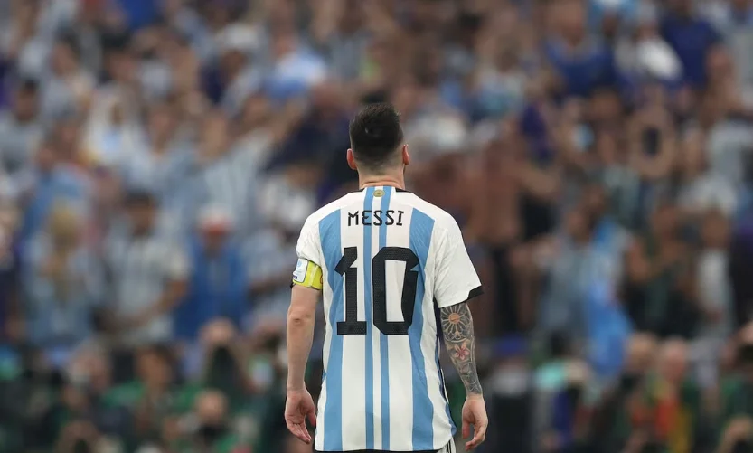

Thank You, Messi
In your farewell message, you said you had given everything. That you had emptied yourself. That there was nothing more to give. That line is difficult to read.

I knew this day would come. For years, we all did. We just never let ourselves believe it.
Every tournament carried the same question: is this the last one? Every match near the end came with the thought that there might not be many more.
Still, when Lionel Messi finally said he was done with Argentina, it was hard to take.
There was no surprise in it. And yet it still felt like one.
Knowing a goodbye is coming does not prepare you for it.
So, thank you, Messi.
Thank you for staying this long.
Thank you for all those nights when football somehow became the most important thing in the world.
Thank you for the goals. The free-kicks. The passes nobody else seemed to see. For taking the ball in impossible situations and still making us believe something could happen.
Thank you for making us believe that as long as the ball was at your feet, the game was not over.
But thank you, too, for the smaller things.
Thank you for helping me win a ridiculous bet against a friend one night.
Thank you for giving me the chance to turn to a rival supporter and say, with complete confidence: “See? This is how you play football.”
Thank you for the late-night messages after a great goal.
For the arguments, the bragging rights.
For giving us enough material to annoy friends who supported the other side.
Thank you for the nights we waited for the final whistle because there was someone we wanted to call immediately afterwards. “Now. Tell me again.”
That is part of football too. Not only World Cups, finals and records.
Sometimes it is simply two friends arguing about who is better.
And for so many of us, you were at the centre of that argument for years.
Thank you for that.
Thank you, too, for the difficult days.
For the defeats.
For the finals that slipped away.
And thank you for that last World Cup final too.
My team, your team, Argentina, played badly that night and lost. I was disappointed, of course, but strangely, I was not devastated by the defeat. They had not played well enough. Sometimes you lose and you accept it.
Then I saw you cry.
And suddenly the defeat felt different.
Watching Argentina lose hurts. Watching you cry hurts somewhere else.
I still cannot quite explain it.
Maybe I never will.
But thank you for making us care that much.
Thank you for the years when we wondered whether it would ever happen for you with Argentina.
Thank you for coming back after you once said you would not.
For trying again.
And again.
Then, finally, thank you for giving us the nights we had waited so long for.
The Copa America.
The World Cup.
Those nights made the years before them worth carrying.
In your farewell message, you said you had given everything. That you had emptied yourself. That there was nothing more to give.
That line is difficult to read.
Because we were never done asking.
One more match.
One more free-kick.
One more goal.
One more time in that shirt.
Just one more.
And even that probably would not have been enough.
That is what supporters are like. The player knows when it is time to stop. We keep asking for more.
So thank you for giving us more than we could reasonably ask for.
Thank you for 20 years.
A lot happens in 20 years.
We grow up.
Careers begin. Friendships change. Families change. People come into our lives and some leave them. Some people we once watched matches with are no longer there to call after the final whistle.
And through all of that, every few years, Argentina would arrive at another tournament.
And there you were.
That became normal.
Argentina playing meant Messi playing.
Now it will not.
There will be another Argentina team.
Someone else will wear number 10.
There will be another World Cup, another Copa America, another great player.
Football will go on.
But for a while, I think our eyes will still look for you.
Argentina will win a free-kick outside the box, and we will remember.
Someone will receive the ball between the lines, turn towards goal, and we will remember.
A friend will suddenly bring up an old match, years from now, and we will remember.
That bet.
That goal.
That night.
That argument.
That final.
And those tears.
That is how much of football stays with us.
So today I do not want to count the goals or trophies.
There will be time for that.
Today I just want to say thank you.
Thank you for the football.
Thank you for the wins.
Thank you for the losses that made the wins matter more.
Thank you for the arguments.
Thank you for the bragging rights.
Thank you for the nights we will still talk about years from now.
Thank you for staying.
Thank you for coming back.
Thank you for giving everything you had.
And thank you for being there through so much of our own lives.
We knew this day would come.
We just never knew exactly how it would feel when it did.
There is nothing left to ask for now.
Only this:
Thank you, Messi.
For everything.